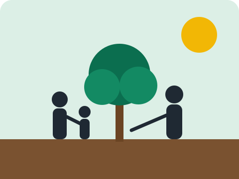

Missão
Promover o desenvolvimento integral de crianças e famílias em situação de vulnerabilidade social por meio da educação.
Desde 2012, a ONG Semear Futuro apoia crianças, adolescentes e famílias da periferia com reforço escolar, alimentação e oficinas de cidadania.

Promover o desenvolvimento integral de crianças e famílias em situação de vulnerabilidade social por meio da educação.
Ser referência regional em projetos socioeducativos transparentes e com impacto mensurável até 2030.
Respeito, inclusão, transparência, participação comunitária e compromisso com a dignidade humana.
Publicamos anualmente nossas prestações de contas. Em 2025, 87% dos recursos foram aplicados diretamente nos projetos, 9% em gestão e 4% em captação.
| Área | Percentual | Valor (R$) |
|---|---|---|
| Projetos | 87% | 652.500,00 |
| Gestão | 9% | 67.500,00 |
| Captação | 4% | 30.000,00 |